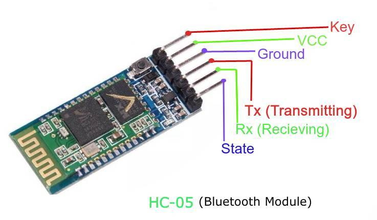
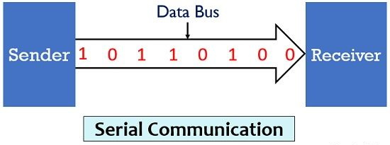

Microoython Libraries for Rapsberry Pi Pico - Wifi & Bluetooth
UART Serial
This library lets you to set your Pico up to receive serial data through one of the UART ports from any serial device.
Such as a HC-05 bluetooth module or a wired connection between two Picos.
from Common import *
class CUARTSerial:
def __init__(self, nBaudRate, nRxPin, nTxPin, nTimeoutMillis = 500):
def GetUARTPort(self):
def WaitForToken(self):
def SendResponse(self, strResponse):
Constructor: __init__(self, nBaudRate, nRxPin, nTxPin, nTimeoutMillis = 500)
The constructor starts the up the UART channel with the specified baud rate, Tx pin and Rx pin.
There is no need to specify the UART channel (0 or 1) because the constructor dtermines this from the pins you specify.
If you specify any pins that are not connected to either UART channel then you will get an error message in the console.
Parameters
- nBaudRate:
An integer specifying the baud rate you wish to use. - nRxPin:
An integer specifying the Rx pin. - nTxPin:
An integer specifying the Tx pin. - nTimeoutMillis :
An optional integer specifying millseconds time out fo receiving data through WaitForToken(...). The default timeout value is 500 milliseconds.
GetUARTPort()
This function simply returns the UART channel number - 0 or 1 .
WaitForToken()
This function blocks until a token is recieved from the UART channel.
Tokens should be delineated with '\n' (ASCII 13) or carriage return.
Returns: A string containing the token sent, without the '\n' at the end.
SendResponse(strResponse)
This function simply sends back a response to the client at the other end of the UART channel.
Parameters
- strResponse:
A string containing the text you wish to send to the client.
Dependancies
Common.py (included in download)
Wifi

The library does a nearly all the hard coding work involved with setting up Wifi on your Pico
You can put your Pico into access point mode or existing network connection mode.
And you can set it up for receiving HTTP requests or UDP datagrams
All with very simpile function calls.
import network
import time
from Common import *
class CWiFi:
# Function overloading not allowed in Python so the constructor just sets the millisecond time out value through optional parameter. The default timeout is 500 milliseconds.
def __init_(nTimeoutMillis):
# Common setup tasks
def Begin(self, bIsAccessPoint, strSSID, strPassword):
# Setup as WiFi for HTTP
def BeginHTTP(self, strSSID, strPassword):
# Setup as WiFi access point for HTTP
def BeginHTTPAsAP(self, strSSID, strPassword):
# Set up as a WiFi for UDP
def BeginUDP(self, strSSID, strPassword, nPort):
# Set up as a WiFi Access Point
def BeginUDPAsAP(self, strSSID, strPassword, nPort):
def HexCodes2ASCII(self, strRequest):
def WaitForRequest(self):
def SendResponse(strResponse, bCloseSocket):
Constructor: __init_(nTimeoutMillis)
The constructor just sets the milliseconds time out through an optional parameter. The default time out value is 500 milliseconds.
def Begin(self, bIsAccessPoint, strSSID, strPassword)
This function is for internal class use only, so dont call it.
def BeginHTTP(self, strSSID, strPassword)
Call this function if you want your Pico to log into an exisitng Wifi network as a web server that receives HTTP requests.
Parameters
- strSSID:
A string containing the name of the network. - strPassword:
A string containing the password for the network.
BeginHTTPAsAP(self, strSSID, strPassword)
Call this function if you want your Pico to start an access point as a web server that receives HTTP requests.
Parameters
- strSSID:
A string containing the name of the network you wish to create. - strPassword:
A string containing the password for the network.
BeginUDP(self, strSSID, strPassword, nPort)
Call this function if you want your Pico to log into an exisitng Wifi network as a UDP server that receives datagrams.
Parameters
- strSSID:
A string containing the name of the network you wish to create. - strPassword:
A string containing the password for the network. - nPort:
An integer containing the port number you want the UDP server to listen to. 10,000 ro 11,000 are typical port numbers used for UDP.
BeginUDPAsAP(self, strSSID, strPassword, nPort)
Call this function if you want your Pico to start an access point as a UDP server that receives datagrams.
Parameters
- strSSID:
A string containing the name of the network you wish to create. - strPassword:
A string containing the password for the network. - nPort:
An integer containing the port number you want the UDP server to listen to. 10,000 ro 11,000 are typical port numbers used for UDP.
HexCodes2ASCII(self, strRequest)
This function is for intenal use only. It is called automatically for incoming HTTP requests. It converts hex codes to the ASCII characters they represent.
WaitForToken()
This function blocks until a HTTP request or UDP datagram is recieved from the through the Wifi connection.
UDP datagrams should be delineated with '\n' (ASCII 13) or carriage return.
Returns: A string containing the HTTP request or UDP datagram.
HTTP requests are stripped down to this form 'GET \', 'GET \file.html' and 'GET \file.html?name=Fred.
In the case of datagrams the '\n' is stripped out.
SendResponse(strResponse, bCloseSocket)
This function simply sends back a response to the client at the other end of the UART channel.
Parameters
- strResponse:
A string containing the text you wish to send to the client. - bCloseSocket:
A boolean specifying whether you want to close the connection after sending your response.
Dependancies
Common.py (included in download)
SerialSource
The library combines the Wifi and UART libraries into a single source of serial data.
You set your Pico up to receive data from only Wifi, Wifi and one UART port or Wifi, both UART ports, just one UART port or just both UART ports.
This is accomplished by calling one of BeginUDP/BeginHTTP function and/or one of the BeginUART functions.
The BeginUDP/BeginHTTP functions and the BeginUART functions are independant of each other.
It makes handling serial data from multiple sources easy.
from WiFi import *
WIFI = "WIFI"
UART0 = "UART0"
UART1 = "UART1"
class CSerialSource:
# Function overloading not allowed in Python so the constructor just sets the time out for receiving data.
def __init_(nMillisTimeout = 500):
# Set the serial source up as a WiFi Access Point with HTTP
def BeginHTTPAsAP(self, strSSID, strPassword):
# Set the serial source up on an existing WiFi network with HTTP
def BeginHTTP(self, strSSID, strPassword):
# Set the serial source up as a WiFi Access Point with UDP
def BeginUDPAsAP(self, strSSID, strPassword, nPort):
# Set the serial source up on an existing WiFi network with UDP
def BeginUDP(self, strSSID, strPassword, nPort):
# Set the serial source up as one UART port
def BeginUART1(self, nBaudRate, nRxPin, nTxPin):
def BeginUART2(self, nBaudRate1, nRxPin1, nTxPin1, nBaudRate2, nRxPin2, nTxPin2):
def WaitForToken(self, nMillis = 500):
def SendResponse(self, strResponse):
def SendResponseUART0(self, strResponse):
def SendResponseUART1(self, strResponse):
def SendResponseWIFI(self, strResponse, bClose = False):
Constructor: __init_(nMillisTimeout = 500)
The constructor just sets the milliseconds time out value through an optional parameter. The default time out is 500 milliseconds.
Begin(self, bIsAccessPoint, strSSID, strPassword)
This function is for internal class use only, so dont call it.
BeginHTTP(self, strSSID, strPassword)
Call this function if you want your Pico to log into an exisitng Wifi network as a web server that receives HTTP requests.
Parameters
- strSSID:
A string containing the name of the network. - strPassword:
A string containing the password for the network.
BeginHTTPAsAP(self, strSSID, strPassword)
Call this function if you want your Pico to start an access point as a web server that receives HTTP requests.
Parameters
- strSSID:
A string containing the name of the network you wish to create. - strPassword:
A string containing the password for the network.
BeginUDP(self, strSSID, strPassword, nPort)
Call this function if you want your Pico to log into an exisitng Wifi network as a UDP server that receives datagrams.
Parameters
- strSSID:
A string containing the name of the network you wish to create. - strPassword:
A string containing the password for the network. - nPort:
An integer containing the port number you want the UDP server to listen to. 10,000 ro 11,000 are typical port numbers used for UDP.
BeginUDPAsAP(self, strSSID, strPassword, nPort)
Call this function if you want your Pico to start an access point as a UDP server that receives datagrams.
Parameters
- strSSID:
A string containing the name of the network you wish to create. - strPassword:
A string containing the password for the network. - nPort:
An integer containing the port number you want the UDP server to listen to. 10,000 ro 11,000 are typical port numbers used for UDP.
BeginUART1(self, nBaudRate, nRxPin, nTxPin)
This sets up one UART port to receive data. You don't need to specify the port number as the function determines the port from the Tx and Rx pins you specify. If you specify invalid Tx or Rx pins then you will get an error message in the console.
BeginUART2(self, nBaudRate1, nRxPin1, nTxPin1, nBaudRate2, nRxPin2, nTxPin2)
This sets up both UART ports to receive data. Again the function determines which UART ports from the pairs of Tx and Rx pins you specify. If you specify invalid Tx or Rx pins then you will get an error message in the console.
WaitForToken()
This function will check for data on any of the sources that have been configured, subject the the milliseconds time out value.
UDP datagrams should be delineated with '\n' (ASCII 13) or carriage return.
Returns: A string containing the HTTP request or UDP datagram or token from the UART ports.
HTTP requests are stripped down to this form 'GET \', 'GET \file.html' and 'GET \file.html?name=Fred.
In the case of datagrams the '\n' is stripped out.
IsFromWIFI(self)
Returns true if the last data received was from Wifi, otherwise false.
IsFromUART0(self)
Returns true if the last data received was from UART0, otherwise false.
IsFromUART1self)
Returns true if the last data received was from UART1, otherwise false.
SendResponse(self, strResponse, bClose = true)
This function sends your response text to the same serial data source that recieved that last lot of incoming data. The class keeps track of which data source received the last lot of incoming data.
Parameters
- strResponse:
A string containing the text you wish to send to the client. - bCloseSocket:
An optional boolean value specifying whether you want to close the connection after sending your response. If you omitt this parameter then it will have the default value of 'true'. It is only relevent if the response is being sent via Wifi.
Dependancies
Common.py (included in download)
WiFi.py (included in download)
UARTSerial.py (included in download)